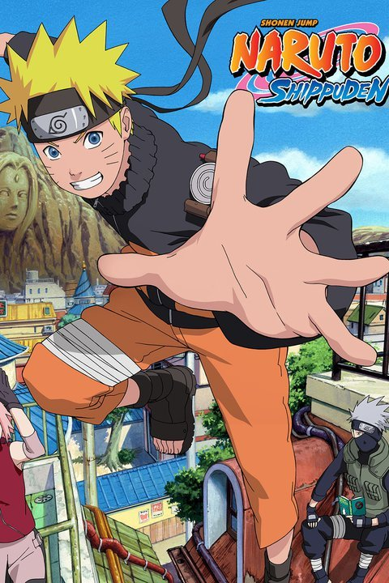

Naruto Shippuden (Aired 2007-)
Rating: 8.6/10
Age Restriction: TV-14
Naruto, a loud, hyperactive, adolescent ninja who constantly searches for approval and recognition and become Hokage, is acknowledged as the leader and strongest ninja of all the village.
Creators: Masashi Kishimoto
Cast
Junko Takeuchi as .... Naruto Uzumaki
Chie Nakamura as .... Sakura Haruno
Maile Flanagan as .... Naruto Uzumaki
Kazuhiko Inoue as .... Kakashi Hatake
Kate Higgins as .... Sakura Haruno
Masako Katsuki as .... Tsunade, The Fifth Hokage
Dave Wittenberg as .... Kakashi Hatake